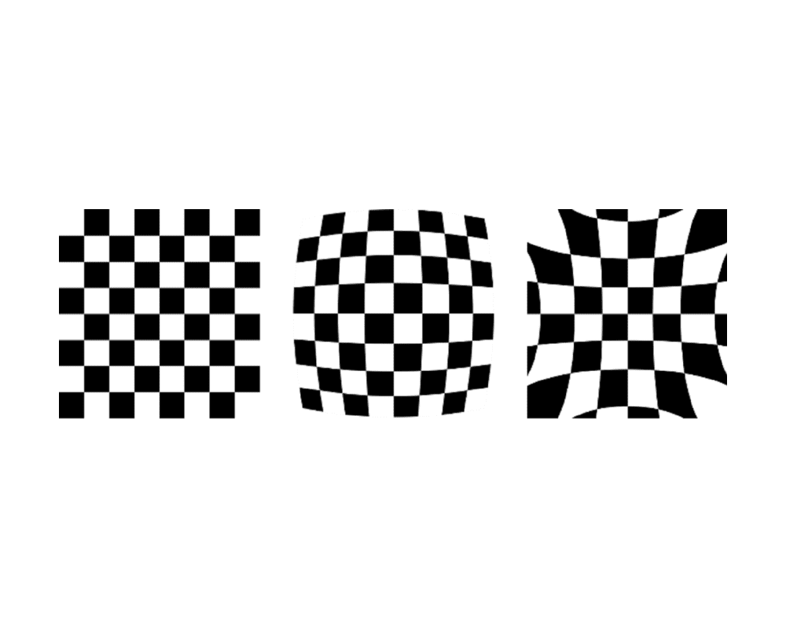
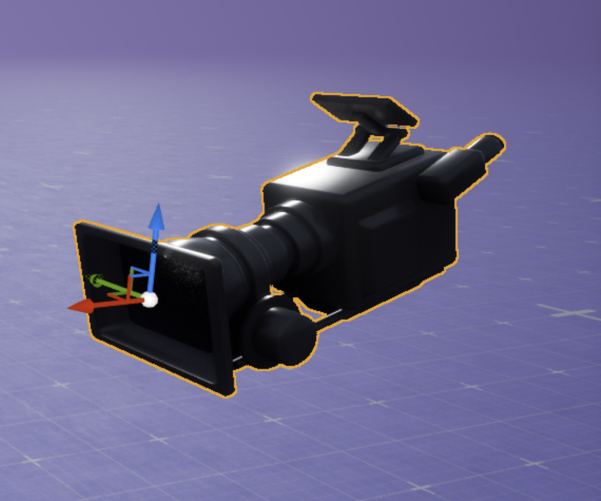
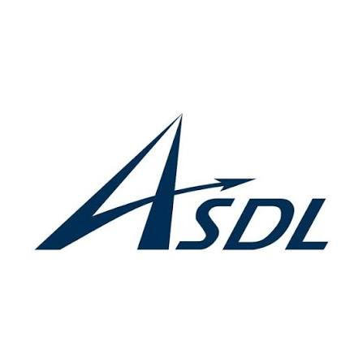
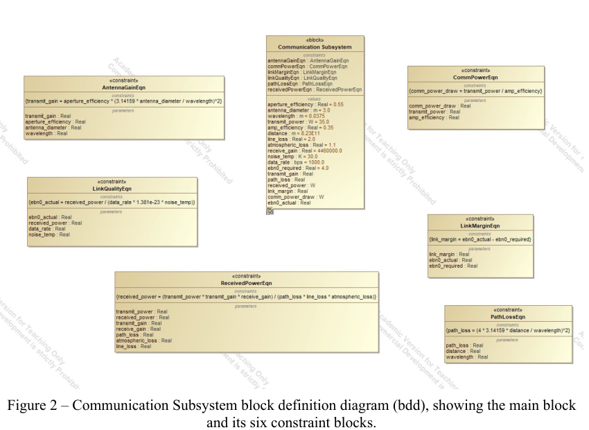
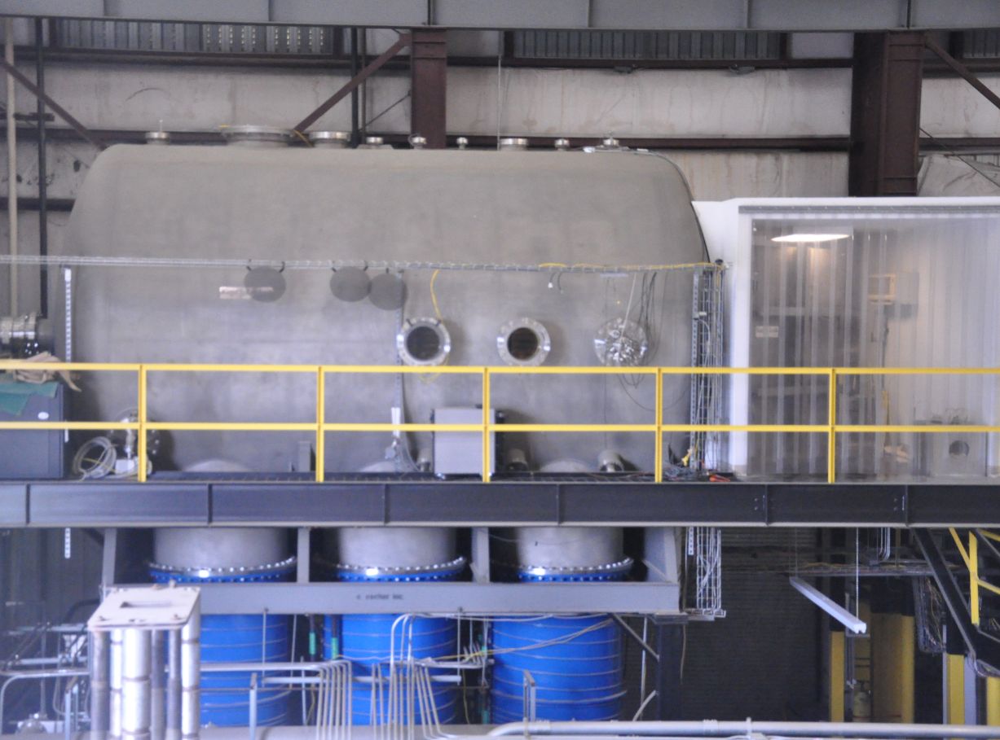
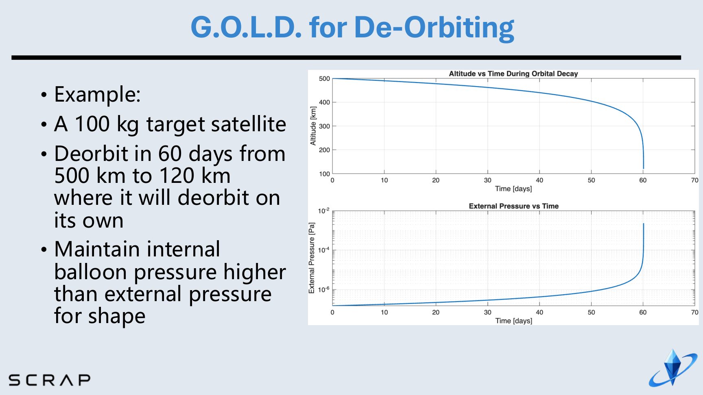
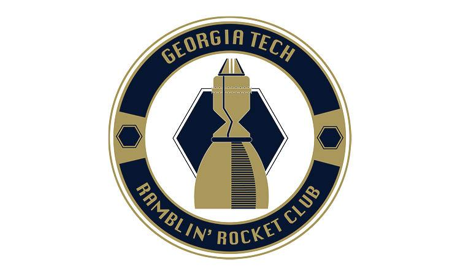

Georgia Tech • B.S. Aerospace Engineering • December 2026
Engineering for exploration
I'm an aerospace engineering student at Georgia Tech with experience across lunar navigation simulation, model-based systems engineering, orbital mission design, and cryogenic propulsion test operations. I enjoy work that connects simulation, software, and physical systems.
My recent projects span Human Landing System terrain-relative navigation support at NASA Marshall, a SysML-based Europa communications model at ASDL, dual-rover lunar mission design through NASA L'SPACE, and an orbital-debris-removal concept developed in Georgia Tech's undergraduate design sequence.
Core Tools
Python
MATLAB / Simulink
Unreal Engine
MagicDraw / SysML
ParaMagic
JMARS
Siemens NX
SolidWorks
Linux
GitHub
Quick Facts
Georgia Institute of Technology
HOPE Scholarship & Dean's List
Interested in GNC, MBSE, mission design, and spacecraft systems
At NASA Marshall Space Flight Center, I'm contributing to lunar Terrain Relative Navigation (TRN) simulation for the Human Landing System. My work focuses on realistic camera imagery, lunar terrain and lighting models, and simulation workflows that support guidance and navigation testing.
Projects & Technical Skills
A public-facing summary of my internship work:
⚙Simulation Integration
Supporting integration between rendered imagery and closed-loop guidance, navigation, and control workflows. This includes debugging simulation behavior, checking image products, and improving repeatability of analysis workflows.
◈Lunar Terrain & Lighting
Working with lunar digital elevation models and albedo-based surface data to improve the fidelity of terrain and lighting in simulation. This supports more realistic visual scenes for navigation testing.
◎Camera & Image Modeling
Using the Brown–Conrady camera distortion model to represent departures from an ideal pinhole camera. The radial coefficients k1 and k2 model how image points shift with radius from the optical center and help evaluate the realism of simulated imagery.
r2 = x2 + y2xd = x (1 + k1r2 + k2r4)yd = y (1 + k1r2 + k2r4)
Here x and y are normalized undistorted coordinates, while xd and yd are the distorted image coordinates. The full Brown–Conrady model can also include tangential distortion terms.

Ideal grid vs. radial distortion

Camera-model visualization
▦Verification & Analysis
Contributing to scalable testing workflows, including Monte Carlo-style analysis concepts, image-quality checks, and cross-platform debugging in Linux-based simulation environments.
✦Tools & Skills
Unreal Engine
MATLAB / Simulink
Linux
Camera Modeling
Lunar DEMs & Albedo
Debugging
Verification
Monte Carlo Concepts
May 2026 - August 2026
Undergraduate Research Assistant ASDL, MBSE Branch

Europa Submarine Model — Team M102. As part of a conceptual mission inspired by Europa Clipper and SWIM, our team modeled six spacecraft and submarine subsystems in MagicDraw using SysML. I developed the communications subsystem to study whether science data could be transmitted from Europa to Earth while accounting for radio power consumption.
My work included building block definition and parametric diagrams, linking six governing constraints for antenna gain, free-space path loss, received power, link quality, link margin, and communications power draw, and solving a subsystem instance using ParaMagic. The model showed a positive link margin under the study assumptions.

Communications subsystem architecture and equation set
MagicDrawSysMLParametric ModelingParaMagicRF Link Budget
In NASA's Mission Concept Academy, I served as Lead Systems Engineer for Lux Lunae, a two-rover lunar south-pole mission concept focused on surveying terrain and volatile-rich permanently shadowed regions. I helped guide overall system definition, requirements integration, and cross-subsystem coordination.
My contributions included creating the rover CAD model and sketches, supporting interface control, and helping shape the preliminary design review package. The mission centered on two rovers, Alpha and Gamma, designed to support both science return and reconnaissance for future lunar surface operations.
Lead Systems EngineeringMission DesignCAD ModelingRequirementsInterface ControlLunar Rover Concept
Selected for NASA's national proposal development and evaluation academy sponsored by Marshall Space Flight Center. I worked on proposal development, review methodology, and team-based concept refinement as part of an award-winning effort selected for continuation funding.
Because some work in this program is not appropriate to post publicly, I keep this section intentionally high-level and focus on the skills developed: technical writing, proposal evaluation, collaboration, and systems-level thinking.
July 2025 - December 2025
Cryogenic Test Operations HPEPL, Georgia Tech

Supported cryogenic test operations in Georgia Tech's High-Pressure Experimental Propulsion Laboratory. I regulated liquid-nitrogen pressure, fill level, and venting to maintain test-chamber stability during overnight rocket-engine operations while following formal procedures and safety protocols.
Spring 2026
SCRAP Project Undergraduate Design II

S.C.R.A.P. was a team-based conceptual active debris removal project aimed at removing high-value orbital debris and defunct satellites from low Earth orbit. The mission combined a contactless electromagnetic de-tumble concept with a passive drag-based de-orbit package called GOLD (Gossamer Orbit Lowering Device).
My work focused on developing a MATLAB model to estimate the descent of the GOLD-equipped target using factors such as drag area, altitude, mass, and related orbital/atmospheric parameters. I also created the risk analysis. As a team, we defined the overall mission architecture, requirements, de-tumble concept, GOLD attachment/de-orbit approach, and supporting subsystem analyses.
Guidance, Navigation & Control Ramblin' Rocket Club

Updated GNCSIM with a calibrated actuator model and validated closed-loop response against static-fire data. Implemented actuator modeling in flight software with deflection and rate limits, supporting both hardware-in-the-loop and software-in-the-loop command tracking studies.